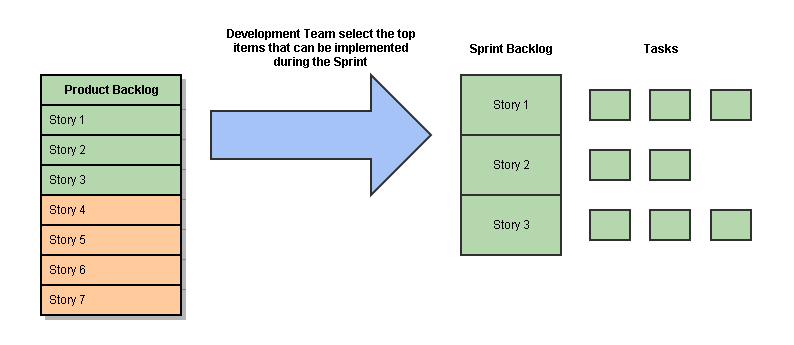
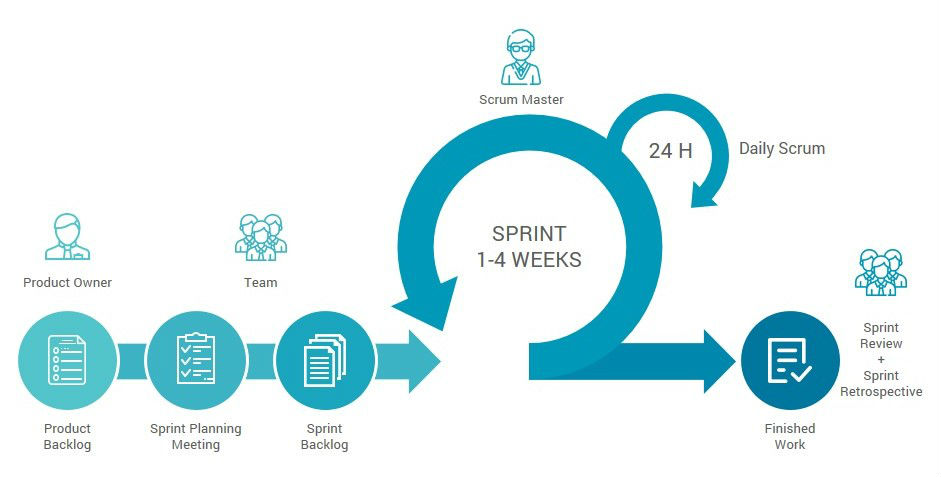

Ceremonies
1. Sprint planning
2. Sprint review
3. Sprint retrospective
4. Daily scrum meeting
Scrum framework
Roles
Core roles:
SCRUM Master
SCRUM Product Owner
SCRUM Team
Ancillary roles:
Users
Stakeholders
thanks for watching!